小説置き場
秘密基地の物語一覧
ここは、秘密基地にまつわる小説をまとめていく場所です。今後追加する小説も、このページから読めるようにしていきます。
作品名を押すと話数一覧が開き、話数を押すと本文が開きます。
人間世界から落ちてきた高性能ゲーミングPCをきっかけに、幽霊とたぬちゃんがゲームと配信に出会っていく物語です。
第1話 本編
紫色のネオンが、夜の秘密基地をぼんやり照らしていた。
そこは、人間世界から少しだけ外れた場所にある、不思議な小さな隠れ家だった。
古い木の扉。
月明かりに光る看板。
壁に貼られた、誰かの落書きみたいな迷言。
そして、奥の部屋には、毎日こっそり押される来場スタンプの台帳が置いてある。
その秘密基地には、幽霊とたぬちゃんが住んでいた。
幽霊は、ふわふわと浮かびながら、今日も部屋の灯りを整えていた。
怖い幽霊ではない。
少し不思議で、少し静かで、でも誰かが迷い込んできたら、ちゃんと「いらっしゃい」と言ってくれる幽霊だった。
「今日も静かだね」
幽霊がそうつぶやくと、床の上で丸くなっていたたぬちゃんが、ぴくっと耳を動かした。
「静かなのも悪くないぽん。でも、ちょっと退屈だぽん」
たぬちゃんは、のんびり屋だけど好奇心だけは人一倍強い。
面白そうなものを見つけると、すぐに近づいてしまう。
幽霊は小さく笑った。
「退屈って言ってる時ほど、たぬちゃんは何か見つけてくるよね」
「それは才能だぽん」
たぬちゃんが胸を張った、その時だった。
――ドスン。
秘密基地の外で、大きな音がした。
二人は同時に振り向いた。
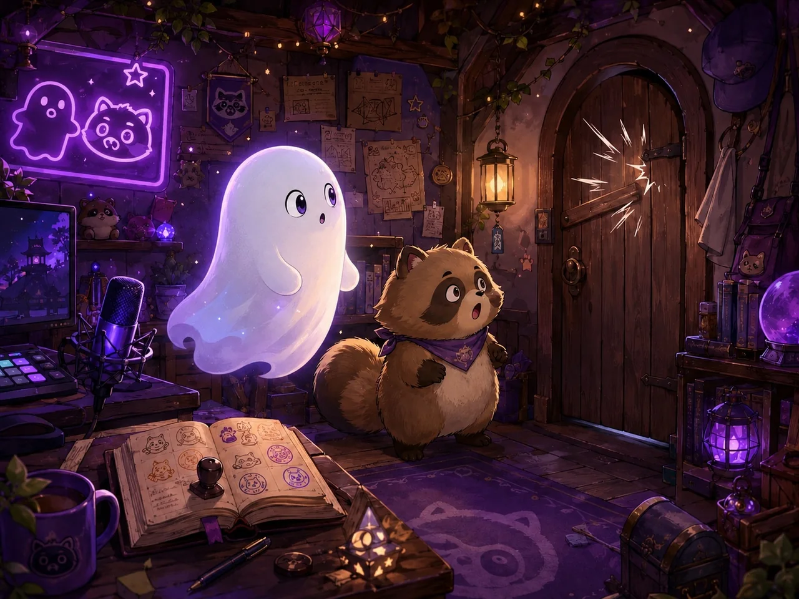
「……今の、聞こえた？」
「聞こえたぽん。すごく聞こえたぽん」
幽霊は少しだけ眉をひそめた。
秘密基地の周りは、ふつう何も落ちてこない。
風が吹くことはある。
迷い込んだ紙切れが飛んでくることもある。
でも、今の音はそんな軽いものではなかった。
たぬちゃんは、もう扉の前まで走っていた。
「見に行くぽん！」
「待って。危ないものかもしれないよ」
「でも、見ないと分からないぽん」
たぬちゃんは扉を開けた。
外には、夜の森が広がっていた。
木々の間から、紫色の光が細く漏れている。
その光の先、秘密基地の裏庭に、見慣れない大きな箱が落ちていた。
箱には、人間世界の文字でこう書かれていた。
高性能ゲーミングPC
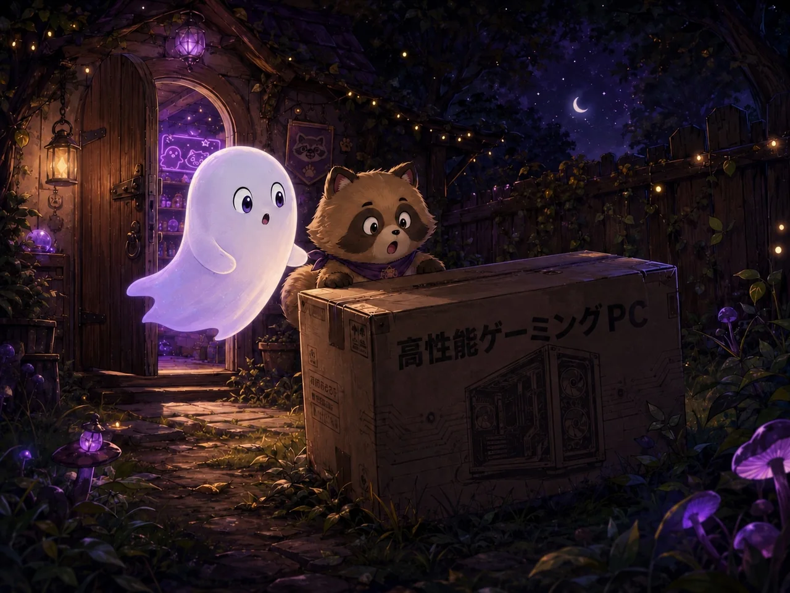
たぬちゃんは首をかしげた。
「げーみんぐ……ぴーしー？」
幽霊は箱の周りをふわりと回った。
「人間世界の機械みたいだね」
「食べ物ではないぽん？」
「たぶん違うね」
たぬちゃんは少し残念そうな顔をしたが、すぐに目を輝かせた。
「じゃあ、遊び道具だぽん！」
「決めるの早いなあ」
二人は箱を秘密基地の中へ運ぶことにした。
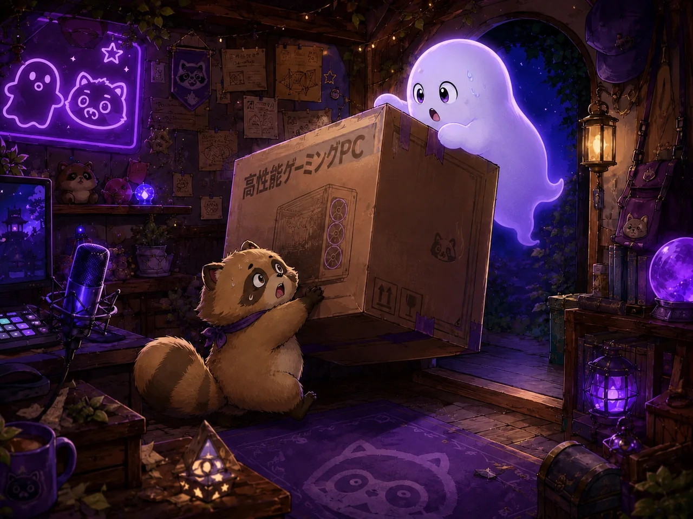
とはいえ、箱はかなり重かった。
たぬちゃんが押して、幽霊が浮かせようとして、何度も向きがずれて、扉にぶつかりそうになった。
「右、右だよ」
「右ってどっちぽん？」
「たぬちゃんのしっぽがある方じゃないよ」
「じゃあ反対ぽん！」
そんなやり取りをしながら、なんとか箱は秘密基地の真ん中に置かれた。
箱を開けると、中には黒く光る大きな機械と、画面、キーボード、マウス、たくさんのコードが入っていた。
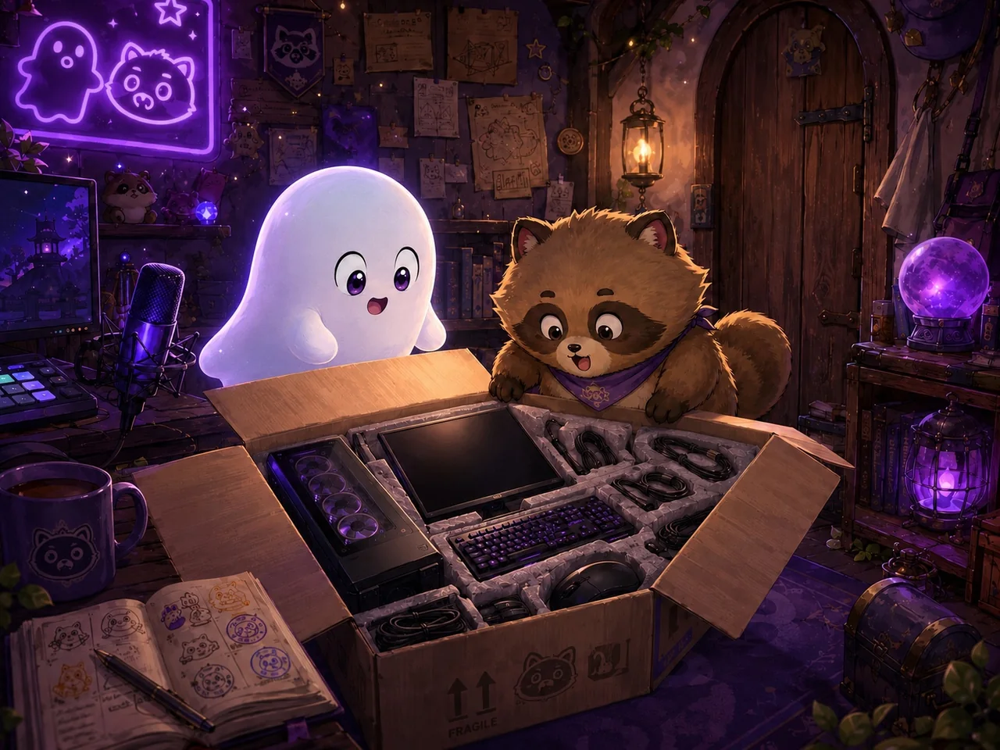
たぬちゃんはキーボードを見つめた。
「ボタンがいっぱいだぽん」
幽霊は説明書らしき紙を手に取った。
「これをつなげば、動くみたい」
「幽霊、こういうの分かるぽん？」
「分からないけど、説明書は読めるよ」
「じゃあ勝ったぽん」
「何に？」
二人は説明書を見ながら、少しずつコードをつないでいった。
画面。
電源。
キーボード。
マウス。
よく分からない線。
もっとよく分からない線。
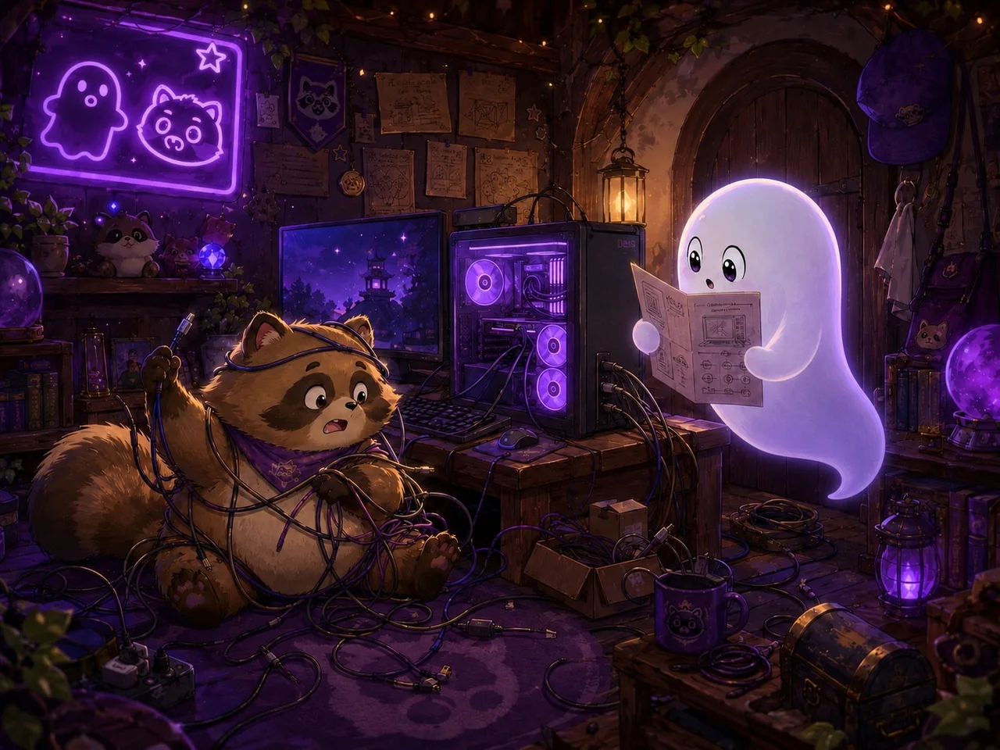
途中でたぬちゃんがコードに絡まり、幽霊がほどいた。
途中で幽霊が電源ボタンを見失い、たぬちゃんが鼻で見つけた。
そして、最後に電源ボタンを押すと――
ブゥン。
静かだった秘密基地に、低い機械音が響いた。
画面が光った。
紫色のネオンとは違う、まぶしい人間世界の光だった。
たぬちゃんは飛び上がった。
「ついたぽん！ 生きてるぽん！」
「生き物ではないと思うけど……すごいね」
画面には、いくつものアイコンが並んでいた。
その中に、ひときわ目立つものがあった。
GAME
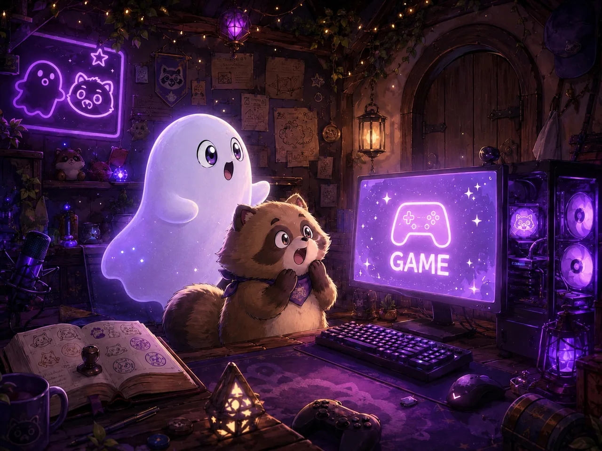
たぬちゃんはそれを見逃さなかった。
「これ、押していいぽん？」
幽霊は少し考えた。
この箱がどこから来たのか。
誰のものなのか。
なぜ秘密基地に落ちてきたのか。
分からないことはたくさんあった。
でも、たぬちゃんの目はきらきらしていた。
そして幽霊自身も、ほんの少しだけ気になっていた。
人間世界のゲーム。
人間たちが夢中になる遊び。
それはいったい、どんなものなのだろう。
幽霊は小さく息をついた。
「少しだけだよ」
「やったぽん！」
たぬちゃんがマウスを押した。
画面が切り替わる。
音楽が流れる。
知らない世界が画面の向こうに広がっていく。
森でもない。
秘密基地でもない。
人間世界でもない。
画面の中には、二人がまだ見たことのない冒険が待っていた。
幽霊は画面を見つめたまま、ぽつりと言った。
「……なんだか、不思議だね」
たぬちゃんは隣で、しっぽをぶんぶん振っていた。
「これは絶対、面白いやつだぽん」
その夜、秘密基地に新しい音が加わった。
キーボードを押す音。
マウスを動かす音。
たぬちゃんの楽しそうな声。
そして、幽霊の小さな笑い声。
二人はまだ知らなかった。
この高性能パソコンが、秘密基地を少しずつ変えていくことを。
ただの遊びだったゲームが、やがて誰かとつながる場所になることを。
そしていつか、この秘密基地にたくさんの来場者がふらっとのぞきに来るようになることを。
その始まりは、ひょんなことから落ちてきた一つの箱だった。
2026/06/10 解放
第2話「はじめてのゲーム」は、2026/06/10に解放されます。
第2話 本編
高性能パソコンの画面に、紫色の光が広がっていた。
秘密基地の中は、いつもより少しだけ明るかった。
棚に置かれた小さなランタン。
壁に光る幽霊とたぬちゃんのネオンサイン。
机の上に開かれた来場スタンプの台帳。
そして、その真ん中で、できたばかりのゲーミングPCが静かに光っている。
たぬちゃんは、画面の前で両手をぎゅっと握っていた。
「すごいぽん……。なんか、もう始まりそうだぽん」
幽霊は、ふわふわと隣に浮かびながら画面を見つめた。
「まだ何も押してないけどね」
画面には、大きな文字が出ていた。
GAME
その下には、小さくこう書かれている。
START
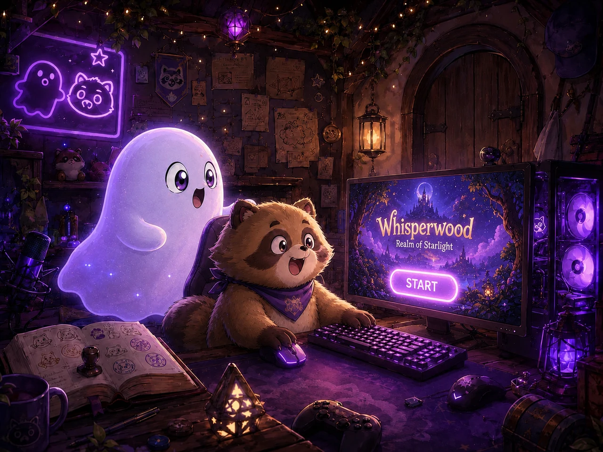
たぬちゃんは、マウスを見た。
それからキーボードを見た。
それから、なぜか自分のしっぽを見た。
「どれを押せばいいぽん？」
「たぶん、マウスで押すんだと思う」
「この黒い小さいやつぽん？」
「うん。そっとね」
たぬちゃんは、マウスに前足を乗せた。
カチッ。
その瞬間、画面がぱっと切り替わった。
紫の星空。
浮かぶ島。
遠くに見えるお城。
きらきら光る小道。
画面の中に、秘密基地とはまったく違う世界が広がっていた。
たぬちゃんは目を丸くした。
「入ったぽん！」
「画面の中にね」
「すごいぽん！ ここ行けるぽん？」
幽霊は少し笑った。
「ゲームだから、動かせば行けるんじゃないかな」
画面の中央には、小さなキャラクターが立っていた。
丸い帽子をかぶった冒険者で、手には小さな剣を持っている。
その上に、説明が表示された。
W A S D で移動
たぬちゃんは、キーボードをじっと見た。
「わ、あ、す、で……？」
「たぶん、この文字のキーを押すんだよ」
「よし、任せるぽん」
たぬちゃんは自信満々に、キーボードへ前足を置いた。
そして、全部まとめて押した。
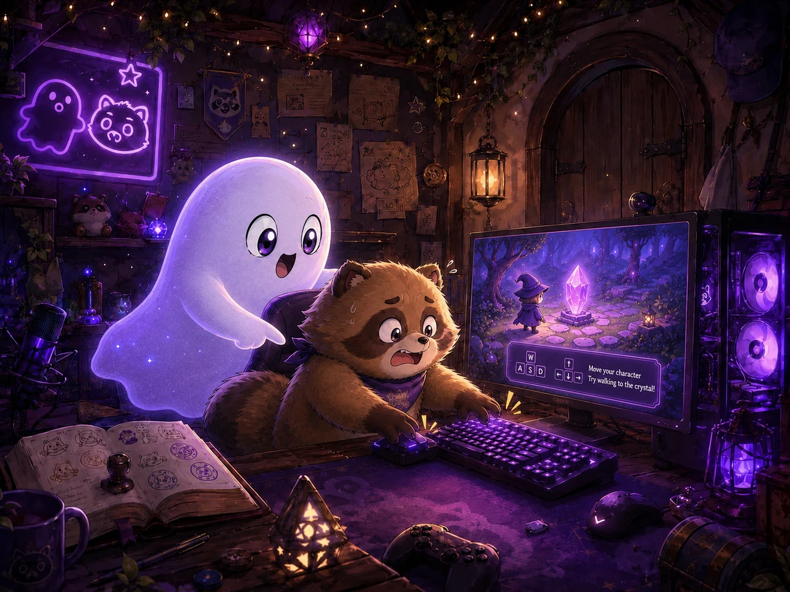
キャラクターは突然ぐるぐる回りながら、木にぶつかった。
「止まらないぽん！」
「押しすぎだよ。ひとつずつ、ひとつずつ」
「ひとつずつが難しいぽん！」
キャラクターは木の根元で、右へ左へ小刻みに動いている。
たぬちゃんは真剣だった。
真剣すぎて、口が少し開いていた。
幽霊は画面の横で、説明書を読みながら言った。
「まずは前に進む。Wだけ押して」
「だぶりゅー……これぽん！」
たぬちゃんがWキーを押す。
キャラクターが一歩、前へ進んだ。
「動いたぽん！」
「うん。今のは上手だった」
「もう一回ぽん！」
キャラクターはまた一歩進んだ。
その先に、小さな光る石があった。
E で調べる
幽霊が指さした。
「あれ、調べられるみたい」
「調べるって、食べられるってことぽん？」
「違うと思う」
たぬちゃんはEキーを押した。
画面の中で光る石がふわっと浮かび、冒険者の周りに小さな星が舞った。
はじまりの結晶を手に入れた
たぬちゃんは息をのんだ。
「もらえたぽん……！」
幽霊も少しだけ目を輝かせた。
「きれいだね」
「これ集めるやつだぽん。たぶん全部集めるやつだぽん」
「まだ一個目だけど、もう全部集める気なんだ」
「もちろんぽん」
その後、二人は少しずつ操作を覚えていった。
前に進む。
後ろに下がる。
横に歩く。
視点を動かす。
ジャンプする。
ただ、ジャンプだけは少し大変だった。
「スペースキーだって」
「すぺーす……どれぽん？」
「これ。一番長いやつ」
たぬちゃんがスペースキーを押す。
冒険者がぴょんと飛んだ。
「飛んだぽん！」
もう一度押す。
また飛ぶ。
さらに押す。
何度も飛ぶ。
冒険者は、何もない場所でずっとぴょんぴょん跳ね続けた。
「楽しいぽん！」
「進んでないよ」
「でも楽しいぽん！」
幽霊は小さく笑った。
秘密基地には、今まで聞いたことのない音が響いていた。
キーボードを押す音。
マウスを動かす音。
ゲームの中から流れる音楽。
たぬちゃんの楽しそうな声。
それは、ただの機械の音ではなかった。
二人だけの秘密基地に、新しい遊びが生まれた音だった。
しばらく進むと、画面の中に小さな敵が現れた。
丸くて、とげとげしていて、ぷかぷか浮いている。
たぬちゃんの耳がぴんと立った。
「なんか来たぽん」
「敵かな」
「敵ぽん！？ どうするぽん！？」
画面には新しい説明が出た。
左クリックで攻撃
幽霊が読んだ。
「マウスを押すみたい」
「これぽんね！」
たぬちゃんは勢いよくクリックした。
冒険者が剣を振る。
しかし、敵には届かなかった。
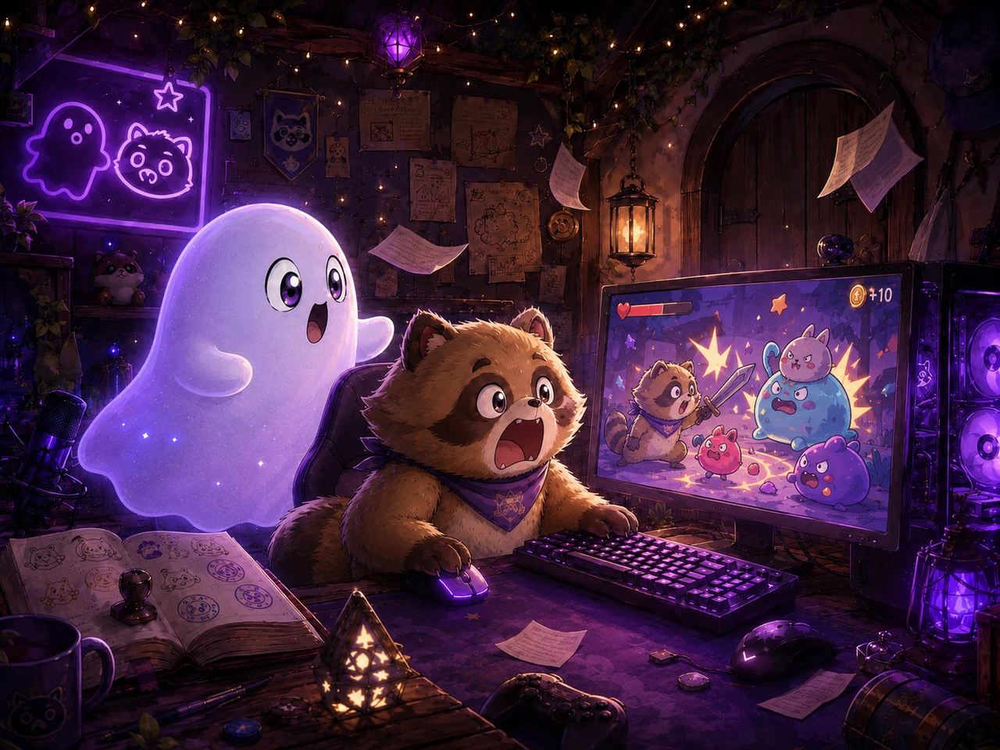
「当たらないぽん！」
「近づいてからだね」
「近づくの怖いぽん！」
「ゲームだから大丈夫だよ」
「ゲームでも怖いものは怖いぽん！」
それでも、たぬちゃんは少しずつ近づいた。
敵がふわふわ動く。
冒険者が剣を振る。
一回目は空振り。
二回目も空振り。
三回目で、やっと当たった。
ポン、と明るい音がして、敵が小さな星になって消えた。
たぬちゃんは固まった。
それから、ゆっくり幽霊を見た。
「……勝ったぽん？」
「勝ったね」
「勝ったぽん！」
たぬちゃんはその場でぴょんぴょん跳ねた。
画面の中の冒険者も、なぜか一緒にぴょんぴょん跳ねていた。
幽霊は笑いながら、たぬちゃんの隣に浮かんだ。
「最初の敵に勝っただけで、そんなに喜ぶんだ」
「最初だから大事なんだぽん！」
「それは、たしかにそうかも」
ゲームの中では、道の先に小さなお城が見えていた。
紫の空に星が浮かび、光る結晶が道を照らしている。
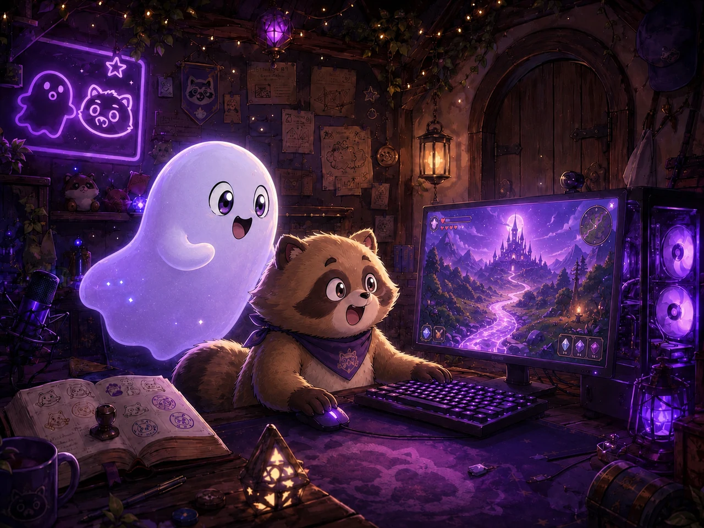
たぬちゃんは、もうすっかり画面に夢中だった。
「次はあのお城に行くぽん」
「今日は少しだけって言ったけど」
「少しだけ行くぽん。お城の前までぽん」
「それ、着いたら中も見たくなるやつだよね」
「ちょっとだけ中を見るぽん」
幽霊は困ったように笑った。
でも、その目はたぬちゃんと同じくらい、画面の世界に引き込まれていた。
秘密基地の外では、夜の森が静かに揺れている。
でも、部屋の中だけは、まるで小さな冒険の入口みたいだった。
「ねえ、たぬちゃん」
幽霊が言った。
「なにぽん？」
「ゲームって、思ってたより不思議だね」
たぬちゃんは画面を見たまま、うなずいた。
「うん。不思議で、忙しくて、ちょっと怖くて……でも、すごく楽しいぽん」
「そうだね」
幽霊は、画面の中の星空を見つめた。
この世界には、まだ知らない道がある。
まだ見たことのない場所がある。
まだ出会っていない何かがある。
そして、その隣には、わくわくしすぎて前のめりになっている友達がいる。
それだけで、なんだか少し楽しかった。
「じゃあ、お城の前までね」
幽霊がそう言うと、たぬちゃんはぱっと顔を輝かせた。
「やったぽん！」
たぬちゃんはWキーを押した。
冒険者が前に進む。
紫の光る道を、ゆっくり歩いていく。
その先に何があるのか、二人はまだ知らない。
けれど、この夜、幽霊とたぬちゃんは知ってしまった。
ゲームの世界には、終わりの時間を忘れさせる力があることを。
そして、秘密基地の夜は、これまでより少しだけ長く、少しだけにぎやかになった。
2026/06/30 解放
第3話「幽霊、はじめてのクリック」は、2026/06/30に解放されます。
第3話 本編
ゲームの画面には、夜の森が広がっていた。
紫色の月明かりに照らされた木々。
遠くには、星の光をまとったお城。
その手前に、小さな橋と、ゆらゆら揺れるランタンが見える。
たぬちゃんは、キーボードの上に両手を置いたまま、目をきらきらさせていた。
「行くぽん……！ あのお城まで行くぽん！」
「その前に、右の茂みに敵がいる」
幽霊が静かに言った。
たぬちゃんは、びくっと肩を跳ねさせた。
「えっ、どこぽん！？」
「画面の右。葉っぱが少し動いてる」
「ほんとだぽん！」
たぬちゃんは慌ててマウスを動かした。
けれど、カーソルは行きすぎて、画面の端をぐるんと向いてしまう。
「わ、わ、見えないぽん！ 空しか見えないぽん！」
「落ち着いて。マウスを少しだけ戻して」
「少しだけって難しいぽん！」
幽霊は、たぬちゃんの横でふわりと浮かびながら、画面を見つめた。
たぬちゃんは一生懸命だった。
でも、敵はどんどん近づいてくる。
画面の中のキャラクターが、森の道で立ち止まった。
「たぬちゃん、左に避けて」
「左ってどっちぽん！？」
「キーボードのA」
「Aぽんね！」
たぬちゃんがAキーを押す。
キャラクターは横に動いた。
そのすぐ横を、黒い影のような敵がすり抜けていった。
「よけたぽん！」
「今。攻撃」
「攻撃ってどれぽん！？」
「マウスの左クリック」
「これぽん！」
カチッ。
小さな光の弾が飛び、敵に当たった。
画面に星のような光がぱっと散る。
たぬちゃんは椅子の上で跳ねた。
「当たったぽん！ 今の見たぽん！？」
「見てた。ちゃんと当たってた」
「たぬちゃん、才能あるぽん？」
「今のは半分くらい案内のおかげ」
「じゃあ二人の才能ぽん！」
幽霊は少しだけ黙った。
そして、小さく笑った。
「それなら、そうかもね」
その時、画面の下に新しい表示が出た。
ASSIST MODE
たぬちゃんが首をかしげる。
「アシストモードって何ぽん？」
「たぶん、二人で操作できる設定」
「二人でぽん？」
画面には説明が出ていた。
一人が移動。
もう一人が照準やアイテムを補助できるらしい。
たぬちゃんは、ぱっと幽霊を見た。
「幽霊もやるぽん！」
「僕は見てるだけでいい」
「さっきから見てるだけじゃないぽん。めちゃくちゃ助けてるぽん」
幽霊は、ゲーミングPCの光を見つめた。
キーボード。
マウス。
画面の中の森。
そして、隣でわくわくしているたぬちゃん。
「……少しだけなら」
「やったぽん！」
たぬちゃんは、マウスを幽霊のほうへ少し寄せた。
幽霊は体を机に近づけ、透き通った両手をそっと伸ばした。
片方の手はマウスに、もう片方の手はキーボードの近くに置かれる。
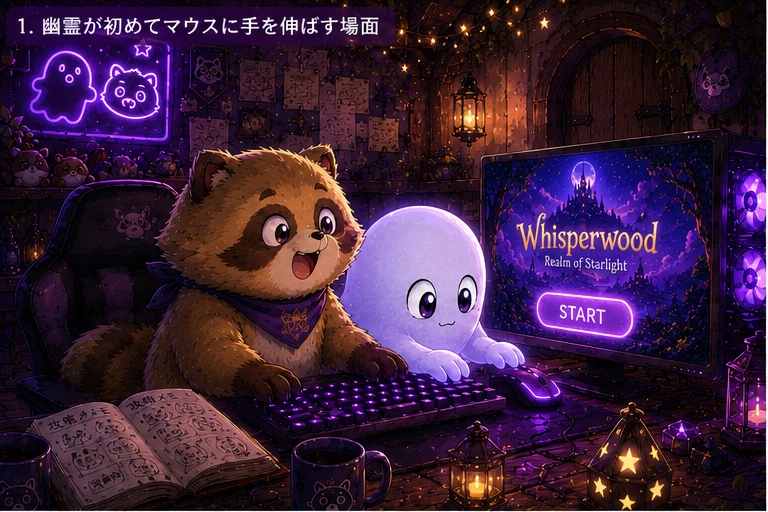
マウスが、ほんの少し光った。
「動くかな」
幽霊が小さくつぶやく。
画面の照準が、すっと動いた。
ぶれることなく、森の奥のランタンにぴたりと合う。
たぬちゃんは目を丸くした。
「うまいぽん」
「たまたま」
「絶対たまたまじゃないぽん」
次の瞬間、茂みの奥から新しい敵が飛び出してきた。
たぬちゃんは声を上げる。
「来たぽん！」
「右に避けて。そのあと、僕が狙う」
「わかったぽん！」
たぬちゃんがDキーを押す。
キャラクターが横へ跳ぶ。
幽霊がマウスを動かす。
照準が敵を追い、ぴたりと止まる。
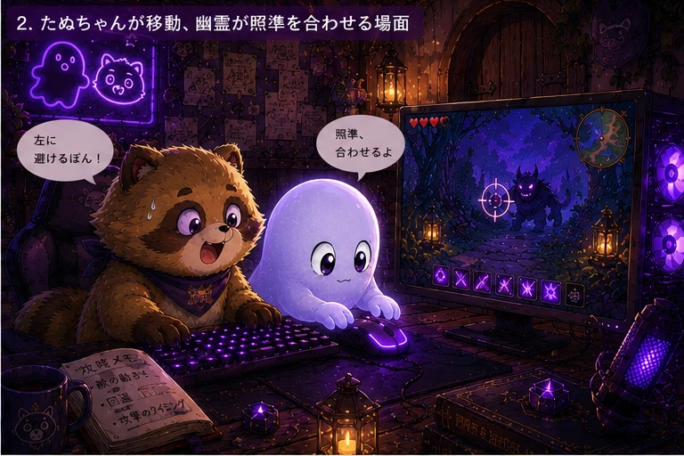
カチッ。
光の弾がまっすぐ飛んだ。
敵は星の粒になって消えた。
秘密基地の中が、一瞬しんと静かになった。
たぬちゃんが、ゆっくり幽霊を見上げる。
「……幽霊、めちゃくちゃうまいぽん」
「そんなことない」
「うまいぽん」
「まだ一回だけ」
「一回でわかるぽん」
幽霊は少し照れたように、画面のほうを向いた。
「じゃあ、次もちゃんと見る。敵の位置と、進む道」
「たぬちゃんが動くぽん！」
「僕が狙う」
「二人でお城まで行くぽん！」
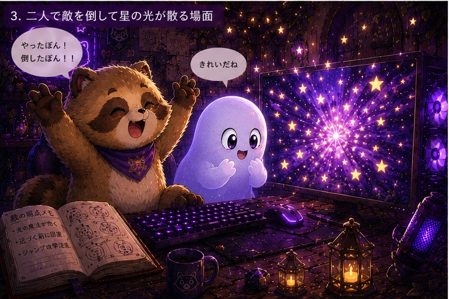
画面の奥で、星明かりのお城がまたたいた。
森の道は、まだ長い。
でも、たぬちゃんはもう怖がっていなかった。
幽霊も、ただ見ているだけではなかった。
秘密基地の机の上で、キーボードとマウスが紫色に光る。
ランタンの灯りがゆれて、ネオンの幽霊とたぬちゃんも、まるで応援しているみたいに光っていた。
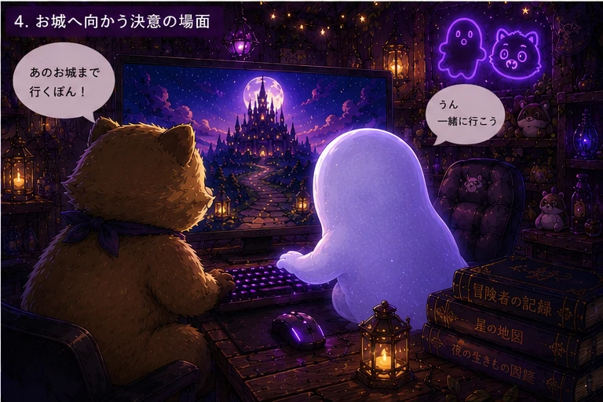
二人の冒険は、少しだけ形を変えた。
ひとりで遊ぶゲームから、
ふたりで進むゲームへ。
そしてその夜、たぬちゃんは何度も言った。
「もう一回ぽん！」
幽霊はそのたびに、少しだけ笑って答えた。
「次は、もっと静かに避けて」
「それは無理ぽん！」
森の奥へ、二人の笑い声が響いていった。
2026/10/18 公開
第4話「秘密基地、配信準備中」は2026/10/18 0:00（日本時間）に公開します。
第4話 本編
星明かりのお城へ続く道は、思っていたよりずっと長かった。
橋を渡っては森へ戻り、宝箱を見つけては寄り道をする。たぬちゃんがキーボードで駆け回り、幽霊が隣で道を確かめるうちに、秘密基地のランタンは何度も油を足すことになった。
「今日はここまでにしよう」
「あと一個だけ宝箱を開けるぽん」
「それ、三個前にも聞いた」
たぬちゃんは丸い体を椅子の上で少し縮めた。けれど、マウスを離す気配はなかった。
幽霊が画面の隅を指した。いつもの地図の横に、見慣れない小さな窓が開いている。
配信準備
「はいしん……。新しいダンジョンぽん？」
「たぶん違う。遊んでいるところを、ほかの誰かに見せるものみたい」
窓の中には、ゲーム画面と小さなマイクの絵があった。その右側には、まだ何も書かれていない細長い箱が並んでいる。
「見ている人が、ここへ言葉を送れるんだって」
「じゃあ、さっきの宝箱も見てもらえるぽん？」
「開ける前ならね」
「もう一回探しに行くぽん！」
「先に準備」
幽霊がそう言って、机の端に置かれていた小さなマイクを二人の間へ動かした。PCと一緒に運び込んだ箱の底には、丸いカメラも入っていた。
たぬちゃんがマイクへ顔を寄せる。
「聞こえるぽーーーーん！」
画面の音量メーターが、緑を通り越して真っ赤になった。幽霊は黙って目を細めた。
「秘密基地の外まで聞こえたと思う」
「マイク、すごいぽん」
「すごいのは声の大きさ」
幽霊がマウスで音量を下げる。たぬちゃんが普通の声で「ぽん」と言うと、今度は緑の棒がちょうどよく揺れた。
カメラをつなぐと、画面の中にもう一つ、秘密基地が現れた。丸い耳と、透き通った体と、背景の木の壁。ランタンの灯りが少し明るすぎて、幽霊の輪郭が壁と混ざっている。
「幽霊が、いつもより幽霊ぽん」
「普段から幽霊だけど」
二人はカメラの向きを直し、ランタンを机の奥へ移した。すると、画面の中でも二人がちゃんと隣にいるのが分かった。
次は、配信画面の飾りだった。
たぬちゃんは星のマークを次々と置いた。上にも下にも、ゲーム画面の真ん中にも。やがて、森も道も星に埋まった。
「きらきらぽん！」
「敵が見えない」
「敵もきらきらにするぽん？」
「星を減らそう」
画面の縁だけに小さな星を残し、木の看板みたいな枠を置く。紫の線で囲まれたゲーム画面の隣には、チャット欄を作った。
まだ何も届いていないその場所を、たぬちゃんはしばらく見つめていた。
「ここに、誰かが来るぽんね」
「来るかもしれない」
「来たら、何て言うぽん？」
「いらっしゃい、でいいんじゃない」
たぬちゃんは小さくうなずいて、声に出さずに口を動かした。さっきマイクを赤くした時より、ずっと真剣な顔だった。
最後に、配信の名前を入力する欄が出た。
「たぬちゃんの最強宝箱探検隊ぽん」
「毎回、宝箱を探すとは限らないよ」
「じゃあ、幽霊とたぬちゃんの、すごい場所ぽん」
「場所は合ってる」
幽霊は木の壁を見回した。ふたりで運び込んだPC。少し傾いたランタン。机に残った、箱を引きずった時の傷。
何かを始めるなら、この部屋の名前を、そのまま持っていきたかった。
「柚胡椒の秘密基地、はどう？」
たぬちゃんは画面と幽霊を交互に見て、それから大きく笑った。
「それがいいぽん。ここに遊びに来てもらうぽん」
一文字ずつ打ち込むたび、看板の名前が画面の中へ移っていった。
配信準備 完了
そして、画面の真ん中に大きなボタンが出た。
配信開始
たぬちゃんの手が、マウスのすぐそばで止まった。いつもの「もう一回」なら、迷わず押せる。でも、そのボタンの向こうには、まだ会ったことのない誰かがいた。
「……押すぽん？」
幽霊は少し考えてから、首を横に振った。
「初めての配信はちゃんと始めたい」
そう言って、机の上の空っぽのコップを見た。外ではもう、月が木々の向こうへ沈みかけている。
「水も用意して、ちゃんと寝て。明日、二人で始めよう」
「最初のあいさつも練習するぽん」
「音量は、今のままで」
二人は顔を見合わせて笑った。たぬちゃんがゲームを保存し、幽霊がマイクの灯りを消す。配信開始のボタンは、まだ押されないまま、画面の中で静かに待っていた。
明日になれば、きっと押す。
二人で。
それが、柚胡椒の秘密基地の、はじめての配信になる。
2026/10/25 公開
第5話「はじめての配信」は2026/10/25 0:00（日本時間）に公開します。
第5話 本編
翌日の秘密基地は、いつもより少しだけ片付いていた。
机には水の入ったコップが二つ。ランタンはカメラに映り込まない場所へ寄せられ、木の壁の看板も、たぬちゃんが背伸びをしてまっすぐに直していた。
ただ、椅子に座ったたぬちゃんだけが、まったく落ち着かなかった。
「あいさつ、忘れたぽん」
「いらっしゃい、だよ」
「それは覚えてるぽん。その次を忘れたぽん」
「まだ誰も来てないから、その次は後で考えよう」
幽霊も、いつもより何度も設定を見直していた。マイクの緑の棒。ゲームの音。画面の端に置いた星。そして、まだ空っぽのチャット欄。
「準備、できた？」
たぬちゃんは、丸い手を膝の上で握ってから、うなずいた。
「できたぽん」
マウスに触れているたぬちゃんの手の横へ、幽霊が短い手をそっと添えた。昨日は遠く見えたボタンが、今日はもう、すぐ目の前にあった。
カチッ。
画面の隅に、赤い小さな丸が灯った。
配信中 00:00:01
二人はしばらく、その数字が増えていくのを見ていた。部屋のどこかで扉が開く音がするわけでも、誰かが拍手をするわけでもない。PCのファンが、いつもどおり静かに回っているだけだった。
「……始まってるぽん？」
「始まってる」
「今のも聞こえたぽん？」
「たぶん全部」
たぬちゃんは背筋をぴんと伸ばした。
「い、いらっしゃいぽん！ 柚胡椒の秘密基地ぽん！ 今日は、お城に……ええと、お城が……」
「お城に向かいます」
「それぽん！」
幽霊の声が入ると、たぬちゃんの肩から少しだけ力が抜けた。いつもの隣の声だ。画面の向こうが誰であっても、この声は変わらない。
ゲームを開くと、キャラクターは昨夜と同じ森の道に立っていた。けれど、たぬちゃんの指は少し忙しすぎた。前へ進もうとして木にぶつかり、戻ろうとして、また同じ木にぶつかる。
「この木、昨日より強いぽん」
「昨日と同じ木だと思う」
その時、チャット欄に小さな文字が一行、現れた。
『こんばんは。木と戦ってる？』
たぬちゃんの指が止まった。幽霊も、マウスから少し手を離した。
何度も試した音声テストより、きれいに並べた星より、その一行のほうがずっと不思議だった。二人しかいない部屋へ、本当に誰かの言葉が届いた。
「来たぽん」
「うん。来てくれたね」
たぬちゃんはマイクへ顔を寄せかけ、昨日の赤いメーターを思い出して、少しだけ離れた。
「こんばんはぽん！ 木には、まだ負けてないぽん！」
『まだ、なんだ』
たぬちゃんが笑った。幽霊もつられて小さく笑い、その間にキャラクターは、ようやく木の横を通り抜けた。
少し先の橋で、敵が二体現れた。幽霊が右の敵を知らせ、たぬちゃんが左へ動く。前の夜に練習したとおり、移動と照準がぴたりと重なった。
光の弾が飛び、敵が星の粒になる。
『今の、二人で操作してるの？』
「そうぽん！ たぬちゃんが動いて、幽霊が狙うぽん！」
『幽霊さん、一人でもやってみて』
幽霊は画面を見たまま、ほんの少し固まった。
「僕は、案内のほうが……」
「たぬちゃんが案内するぽん！」
「道、覚えてる？」
「明るいほうぽん！」
「だいぶ広い案内だね」
それでも、幽霊はキーボードを自分の正面へ少し寄せた。片方の手をキーに、もう片方をマウスに置く。
キャラクターが静かに橋を渡り始めた。敵の動きを待ち、横へ避け、照準を合わせる。たぬちゃんが驚く間もなく、道の先のランタンが一つ、また一つと灯った。
「やっぱりうまいぽん！」
『案内係、強かった』
幽霊の輪郭が、ランタンの光の中で少しだけ揺れた。
「落ち着いて見ていれば、そんなに……」
「右に宝箱ぽん！」
「えっ」
幽霊がマウスを動かした瞬間、足元の小さな石につまずいた。キャラクターが橋の端でくるりと回り、危うく川へ落ちかける。
チャット欄に、笑う文字がいくつか並んだ。たぬちゃんは椅子の上でおなかを抱えた。
「幽霊も、びっくりするぽんね！」
「急に言わなければ大丈夫だった」
その言い方がいつもより少し早くて、たぬちゃんはもう一度笑った。
お城には、まだ着かなかった。予定していた道から外れ、宝箱を探し、水を飲む休憩を挟んだ。けれど、空っぽだったチャット欄は、もう空っぽではなかった。
『今日はここまで？』
幽霊が時計を見てうなずいた。たぬちゃんは一瞬だけ「もう一回」と言いかけてから、コップを両手で持ち直した。
「今日はここまでぽん。また、お城の続きからやるぽん」
『また来るね』
その言葉を、たぬちゃんはすぐには読み上げなかった。画面に残る短い文字を、もう一度、ゆっくり見た。
「……また来てぽん」
「見に来てくれて、ありがとう」
幽霊が配信終了のボタンを押した。赤い丸が消えると、秘密基地には、二人の呼吸とPCの小さな音が残った。
「どうだった？」
「緊張したぽん」
「僕も」
「でも、またやりたいぽん」
幽霊は消えたチャット欄のあたりを見て、それからうなずいた。
二人で始めた冒険に、今日はもう一つ、帰ってきたくなる理由が増えていた。
2026/11/01 公開
第6話「柚胡椒の秘密基地」は2026/11/01 0:00（日本時間）に公開します。
第6話・最終話 本編
配信を始めてから、秘密基地の机には、小さな紙が置かれるようになった。
水を用意する。
音を確かめる。
ゲームを保存する。
終わる前に、ありがとうを言う。
最後の一行だけは、たぬちゃんが大きな文字で書いた。勢いよく書きすぎて、「う」のしっぽが紙から少しはみ出している。
「それ、忘れないため？」
幽霊が尋ねると、たぬちゃんは首を横に振った。
「忘れたくないからぽん」
幽霊は紙を机の端へずらし、マイクで隠れない位置に置いた。
その夜、二人が配信を始めると、ほどなくチャット欄に言葉が届いた。
『こんばんは。また来たよ』
『今日はお城まで行けるかな』
「いらっしゃいぽん！」
「こんばんは。今日は、門の先まで行ってみます」
最初の夜より、あいさつは少しだけ自然に出てきた。たぬちゃんの声は相変わらず元気で、幽霊は隣でさりげなく音量を確かめている。
画面の中では、星明かりのお城が、ようやく二人の目の前に立っていた。森のランタンを順番に灯し、何度も橋を渡って、寄り道の宝箱もいくつか開けた。その先にあった、大きな門だった。
「最初に見た時は、すぐ着けると思ったぽん」
「宝箱の数を数えなければ、もう少し早かったかも」
『宝箱も冒険のうち』
「ほら、そうぽん！」
たぬちゃんが胸を張ったところで、門の前の石像が動いた。星の欠片をまとった、大きな番人。地面に落ちる影が、二人のキャラクターをすっぽり覆った。
「大きいぽん」
「動きを見よう。まずは近づきすぎないで」
たぬちゃんがキーボードを押す。幽霊がマウスで視点を動かす。番人の右腕が上がると、二人は息を合わせて横へ避けた。
一度目は間に合わなかった。
二度目は避けた先でつまずいた。
三度目は、攻撃の光が番人の肩をすり抜けた。
「あとちょっとだったぽん……」
たぬちゃんの耳が、少しだけ下がった。マウスのそばにある幽霊の手も止まっている。
『避けるの、さっきより早くなってた』
『肩が光った後に、胸も光ってない？』
幽霊は、もう一度画面を見た。攻撃の直前、右肩の星が明るくなる。その光が消える頃、胸の小さな模様が開いていた。
「……本当だ。見る場所が一つ、足りなかった」
「今度はいけるぽん？」
「試してみよう。たぬちゃんは右に避けて。胸が光ったら、僕が狙う」
たぬちゃんは椅子に座り直した。
「わかったぽん」
番人が腕を振り上げる。たぬちゃんがDキーを押し、キャラクターが横へ滑った。地面に光が走る。そのすぐ後ろで、番人の胸が淡く開いた。
「今」
幽霊の声は小さかった。けれど、たぬちゃんには、はっきり聞こえた。
マウスの照準が止まる。
カチッ。
放たれた光が、星の模様の真ん中へ吸い込まれた。番人の体が大きく揺れ、まとっていた欠片が、夜空へ向かってほどけていく。
大きな門が、ゆっくりと開いた。
「開いたぽん！」
チャット欄にも、同じ言葉が並んだ。おめでとう。やったね。今の、きれいに当たった。
たぬちゃんは両手を上げ、それから慌ててキーボードへ戻した。キャラクターが、嬉しさの勢いで門の柱にぶつかりかけている。
「最後まで前を見て」
「今はちょっと難しいぽん！」
幽霊は笑いながら、視点を門の向こうへ向けた。
お城の中にあったのは、金銀の山ではなかった。小さな中庭に、長い木の机が置かれている。真ん中のランタンには、森で見つけたものと同じ星の灯りがともっていた。
画面に文字が浮かぶ。
ここまで来た旅人へ。
どうぞ、ひと休みを。
たぬちゃんは黙って、その机を見た。どこかで見たことがある気がした。きらきらした城壁よりも、広い宝物庫よりも、ずっとよく知っている場所に似ていた。
「秘密基地みたいぽん」
「そうだね」
幽霊は、画面の外へ目を向けた。木の壁。紫のネオン。少し傾いたままのランタン。そして、自分たちの声を拾っている小さなマイク。
人間世界から落ちてきた箱を、二人で引っ張ってきた夜には、ここはただ、二人で隠れて遊ぶ場所だった。
今も、部屋の広さは変わっていない。椅子も二つのままだ。それなのに、画面の右側には、ここで一緒に笑ってくれた誰かの言葉が残っている。
『いい部屋だね』
「うん。いい部屋だと思う」
幽霊がそう答えると、たぬちゃんが、ぱっとこちらを向いた。
「ゲームのお城の話ぽん？」
「どっちも」
たぬちゃんは少し考えて、それから満足そうに笑った。
ゲームの区切りの画面には、小さく「CLEAR」と出ていた。その下に、二人のキャラクターが並んでいる。
「終わっちゃったぽんね」
言ってから、たぬちゃんはチャット欄を見た。
『次は何で遊ぶ？』
『また二人で迷子になってほしい』
「迷子は予定に入れてない」
幽霊が答えた。たぬちゃんは、もう笑っていた。
「でも、宝箱は探すぽん！」
配信を終える前に、二人は机の紙を見た。
「今日も見に来てくれて、ありがとうぽん」
「また、ここで。見るだけでも、ひとこと話していっても」
赤い丸が消えた後も、部屋の灯りは消えなかった。たぬちゃんがコップを片付け、幽霊がゲームの記録を確かめる。
モニターの中には、長い机とランタンが残っていた。モニターの外では、同じように、紫の灯りが静かに揺れている。
「最初は、すごいPCを見つけたと思ったぽん」
たぬちゃんが言った。
「すごいPCだったよ」
「うん。でも、それだけじゃなかったぽん」
幽霊はうなずいて、画面のそばの小さな星を一つ、まっすぐに直した。
この箱が連れてきたのは、遠いお城だけではなかった。二人で何かを始める時間と、失敗を笑える相手と、また来るねと言ってくれる誰かだった。
木の扉の向こうで、夜風が小さく鳴った。たぬちゃんが椅子の上で伸びをして、いつもの声で言う。
「明日も遊ぶぽん」
「明日は、最初から水を用意しておこう」
二人の笑い声が、秘密基地にやわらかく響いた。
看板に灯っている名前は、あの日と同じ。
柚胡椒の秘密基地。
もう、二人だけの秘密ではない。
けれど、ふらっと帰ってこられる灯りは、これからもここにある。
――おしまい。